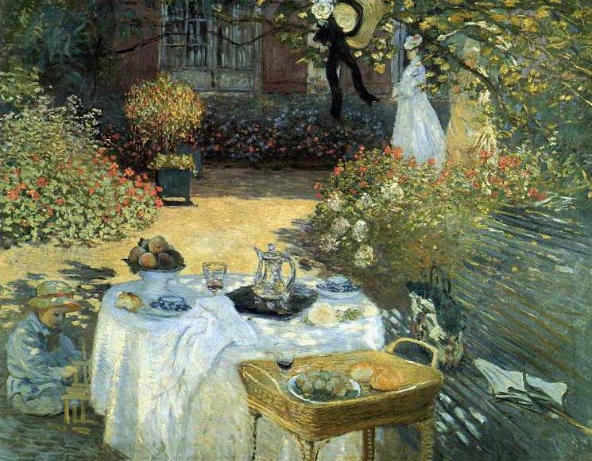

|
Клод Моне | |
| Клод Моне – выдающийся французский живописец. Один из основоположников импрессионизма. В своих работах Моне стремился передать богатство и насыщенность окружающего мира. Для его позднего периода характерны декоративизм и Для позднего периода творчества Моне характерны декоративизм, все большее растворение предметных форм в изощренных сочетаниях цветовых пятен. Родился 14 ноября 1840 года в Париже, скончался 5 декабря 1926 в Жверни. | |
| 1 - Утес Уелк в Пурвилле, 1882; 2 - После ланча, 1873-1876; 3 - Этрет, закат, 1883. | |
|
 |
|
|
email: danredtu1103@mail.ru |